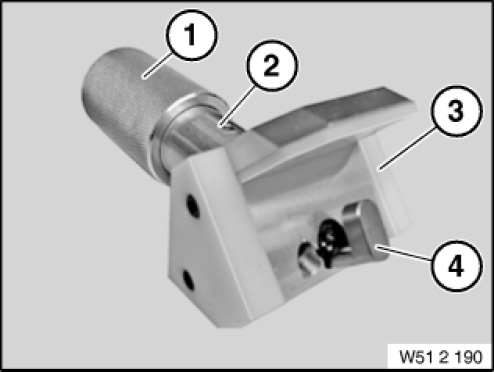

51 2 190 Door Lock Tensioner
51 2 190 Adjuster
0494325
Minimum set: Mechanical tools
MW

NOTE: (door lock tensioner) For pre-tensioning front and rear door locks when installing. Change to tool through use of noise-optimized locks from 02/2004. Illustration items: 1 = knurled nut 51 2 191 2 = support 51 2 192 3 = protection 51 2 196 4 = mandrel 51 2 197
Storage Location: B44
C44
SI number: 01 06 02 (864)
Consisting of:
1 = 0494470 nut
NOTE: (Knurled nut) Replaced by 00 9 120 (0 490 504)
2 = 0494471 Upholstery
2 = 0494472 Guard
NOTE: Is replaced by 51 2 196 with the use of noise-optimized locks from 02/2004 Replaced by 51 2 196 (0 494 906)
2 = 0494473 Mandrel
NOTE: Is replaced by 51 2 197 with the use of noise-optimized locks from 02/2004 Replaced by 51 2 197 (0 494 907)
2 = 0494474 Shaped element
NOTE: E85 (omitted)
3 = 0494906 Guard
NOTE: Replaces guard 51 2 193
4 = 0494907 Mandrel
NOTE: Replaces mandrel 51 2 194